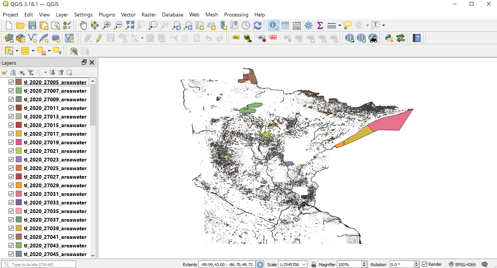
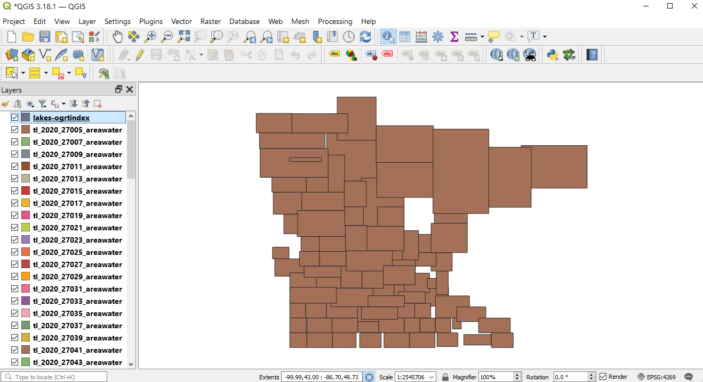
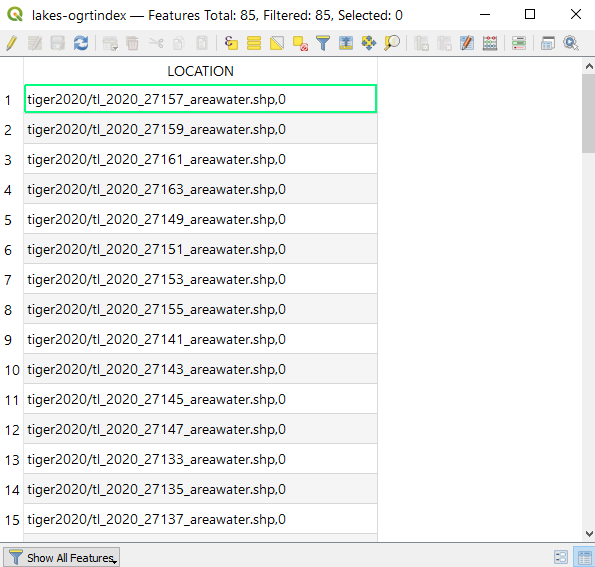
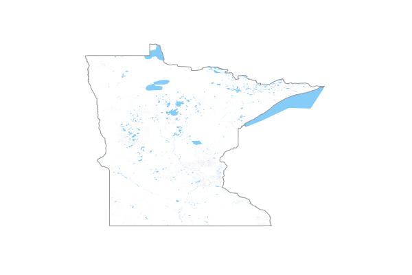
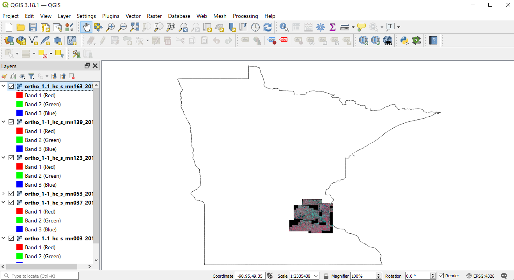
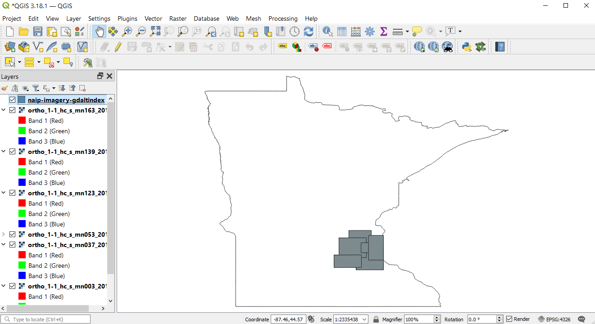
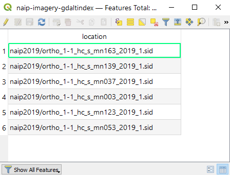
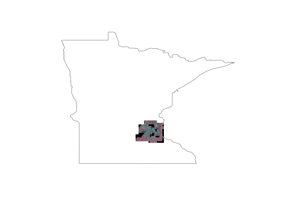

Tile Indexes¶
- Author:
Jeff McKenna
- Contact:
jmckenna at gatewaygeomatics.com
- Original Author:
HostGIS
- Last Updated:
2021-03-23
Introduction¶
Tileindexes are MapServer’s method for doing on-the-fly mosaicing.
What is a tileindex and how do I make one?¶
A tileindex is a dataset (usually a shapefile) that ties together several datasets into a single layer. Therefore, you don’t need to create separate layers for each piece of imagery or each county’s road data; make a tileindex and let MapServer piece the mosaic together on the fly.
Making a tileindex is easy using gdaltindex for GDAL data sources (rasters) and ogrtindex for OGR data sources (vectors). You just run them, specifying the index file to create and the list of data sources to add to the index.
Note
There is also the tile4ms utility, but it only handles shapefile mosaic/indexing.
For example, to make a mosaic of several GeoTIFFs, creating an index file named tileindex-tif.shp:
gdaltindex tileindex-tif.shp folder/*.tif
And to make a mosaic of vectors, creating an index file named tileindex-tiger.shp:
ogrtindex tileindex-tiger.shp tiger/CA/*.shp tiger/NV/*.shp
If your data files are in different subfolders, you can use the –optfile switch for vectors or rasters to pass a file list to ogrtindex/gdaltindex, such as:
#windows (create a file listing all .tif in subfolders)
dir /s/b *.tif > tif_list.txt
#unix
find . -name "*.tif" > tif_list.txt
#call gdaltindex with the --optfile switch
gdaltindex gdaltindex-dirs.shp --optfile tif_list.txt
Note
ogrtindex and gdaltindex add the specified files to the index. Sometimes you’ll have to delete the index file to avoid creating duplicate entries.
Using the tileindex in your mapfile¶
Using a tileindex as a layer is best explained by an example:
LAYER
NAME "Roads"
STATUS ON
TYPE LINE
TILEINDEX "tiger/index.shp"
TILEITEM "LOCATION"
END
There are two items of note here: TILEINDEX and TILEITEM. TILEINDEX is simply the path to the index file, and TILEITEM specifies the field in the shapefile which contains the filenames referenced by the index. The TILEITEM will usually be “LOCATION” unless you specified the -tileindex option when running gdaltindex or ogrtindex.
Two important notes about the pathnames:
The path to TILEINDEX follows the same conventions as for any other data source, e.g. using the SHAPEPATH or else being relative to the location of the mapfile.
The filenames specified on the command line to gdaltindex or ogrtindex will be used with the same conventions as well, following the SHAPEPATH or else being relative to the mapfile’s location. You might find it useful to change into the SHAPEPATH directory and then run ogrtindex/gdaltindex from there; this ensures correct pathnames.
Tileindexes may make your map faster¶
A tileindex is often a performance boost for two reasons:
It’s more efficient than having several separate layers.
MapServer will examine the tileindex to determine which datasets fall into the map’s view, and will open only those datasets. This can result in a great savings for a large dataset, especially for use cases where most of the time only a very small spatial region of the data is being used. (for example, citywide maps with nationwide street imagery)
Tip
You can also run shptree on your tileindex file, so that MapServer can locate the associated feature/record faster.
A tileindex will not help in the case where all/most of the data sources will usually be opened anyway (e.g. street data by county, showing states or larger regions). In that case, it may even result in a decrease in performance, since it may be slower to open 100 files than to open one giant file.
The ideal case for a tileindex is when the most typically requested map areas fall into very few tiles. For example, if you’re showing state and larger regions, try fitting your data into state-sized blocks instead of county-sized blocks; and if you’re showing cities and counties, go for county-sized blocks.
You’ll just have to experiment with it and see what works best for your use cases.
Tileindexes with tiles in different projections¶
Starting with MapServer 6.4 for raster layers, and MapServer 7.2 for vector layers, a tileindex can contain rasters/layers in different projections. Such tileindex can be generated with gdaltindex (GDAL 1.11 or later) and ogrtindex (GDAL 2.2 or later), with the -t_srs and -src_srs_name options. The -t_srs instructs gdaltindex/ogrtindex to write the envelope of each tile into a common target projection, so that the geometries written in the tile index are consistent. This common projection must be the projection of the raster/vector layer.
gdaltindex -t_srs EPSG:4326 -src_srs_name src_srs imagery.shp imagery/*.tif
The corresponding LAYER definition will need to specify the TILESRS keyword with the value of the -src_srs_name option.
e.g:
LAYER
NAME "My Imagery"
STATUS ON
TYPE RASTER
TILEINDEX "imagery.shp"
TILEITEM "LOCATION"
TILESRS "src_srs"
PROJECTION
AUTO
# or :
# "+init=EPSG:4326"
END
END
MapServer will then be able to proceed to on-the-fly mosaicing and reprojection.
Note for WCS layers¶
For layers that must be exposed as WCS layers, a few metadata fields (“wcs_extent”, “wcs_size”, “wcs_resolution”) must be specified in the LAYER definition, so as to define a “virtual dataset” coverage (see WCS Server). The GDAL wcs_virtds_params.py sample script can help generating those metadata fields.
Long ogrtindex example¶
This example uses TIGER Census data, where the data contains files divided up by county. In this example we will show how to display all lakes for the state of Minnesota. The TIGER Census data for Minnesota is made up of 85 different counties, each containing its own lakes file (‘xxxx_areawater.shp’).
Figure 1: County lake files displayed in QGIS
Our directory structure looks like the following (‘tiger2020’ contains the 85 shapefiles):
- mainfolder
- data
- tiger2020
- tileindex.map
We need to generate the index file with ogrtindex. First we will change directory into the data folder, so that the index file is generated there, then execute ogrtindex:
cd data ogrtindex lakes-ogrtindex.shp tiger2020/*.shp
We can now load that new index file lakes-ogrtindex.shp into QGIS to examine it.
Figure 2: Index file created by ogrtindex utility
Figure 3: Attributes of index file created by ogrtindex utility

Note
Notice the relative paths in the LOCATION field, which is the default (and recommended) for ogrtindex. If you need full/absolute paths you can use the -write_absolute_path switch.
A protip is to then run shptree on the ogrtindex file and all of the .shp files used, so MapServer can access them quickly.
cd data #windows command: for /R %f in (*.shp) do shptree %f #unix command: find /path/to/data -name "*.shp" -exec shptree {} \;
You should now see associated .qix files created for each shapefile.
The final step is to use this in your mapfile.
LAYER object’s TILEINDEX - must point to the location of the index file
LAYER object’s TILEITEM - specify the name of the field in the index file containing the paths (default is ‘location’)
do not need to use the LAYER’s DATA parameter
the location path inside your tileindex file will be relative to the SHAPEPATH, as shown below:
For example:
MAP NAME "tileindex-map" STATUS ON SIZE 600 400 SYMBOLSET "../etc/symbols.txt" EXTENT -99.99 43.13 -86.70 49.60 UNITS DD SHAPEPATH "./data" IMAGECOLOR 255 255 255 FONTSET "../etc/fonts.txt" PROJECTION "init=epsg:4269" END # projection /* Lakes: Tiger Census 2020 */ LAYER NAME "lakes" TYPE POLYGON STATUS OFF TILEITEM "LOCATION" TILEINDEX "lakes-ogrtindex.shp" PROJECTION "init=epsg:4269" END # projection CLASS NAME "Lakes" STYLE COLOR 134 204 249 END # style END # class END # layer END # Map File
And of course use map2img to generate your map image.
map2img -m tileindex.map -o ttt.png -map_debug 3
When you view the layer in a MapServer application, you will notice that when you are zoomed into a small area of the state (such as a single county) only the necessary lake shapefiles are loaded, which speeds up the application.
Long gdaltindex example¶
This example uses NAIP ortho imagery, for counties in the state of Minnesota. The format is MrSID. Since the data is so large, for this exercise 6 counties were used (so 6 MrSID raster files). An example filename in this case is ortho_xxxx.sid
Figure 1: MrSID imagery displayed in QGIS
Our directory structure looks like the following (‘naip2019’ contains the 6 MrSID images):
- mainfolder
- data
- naip2019
- tileindex.map
We need to generate the index file with gdaltindex. First we will change directory into the data folder, so that the index file is generated there, then execute gdaltindex:
cd data gdaltindex naip-imagery-gdaltindex.shp naip2019/*.sid
We can now load that new index file naip-imagery-gdaltindex.shp into QGIS to examine it.
Figure 2: Index file created by gdaltindex utility
Figure 3: Attributes of index file created by gdaltindex utility

Note
Notice the relative paths in the LOCATION field, which is the default (and recommended) for gdaltindex. If you need full/absolute paths you can use the -write_absolute_path switch.
A protip is to then run shptree on the gdaltindex file so MapServer can access it quickly.
cd data shptree naip-imagery-gdaltindex.shp
You should now see a .qix file created.
The final step is to use this in your mapfile.
LAYER object’s TILEINDEX - must point to the location of the index file
LAYER object’s TILEITEM - specify the name of the field in the index file containing the paths (default is ‘location’)
do not need to use the LAYER’s DATA parameter
the location path inside your tileindex file will be relative to the SHAPEPATH, as shown below:
For example:
MAP NAME "tileindex-map" STATUS ON SIZE 600 400 SYMBOLSET "../etc/symbols.txt" EXTENT -99.99 43.13 -86.70 49.60 UNITS DD SHAPEPATH "./data" IMAGECOLOR 255 255 255 FONTSET "../etc/fonts.txt" PROJECTION "init=epsg:4269" END # projection /* Ortho imagery: NAIP 2019 */ LAYER NAME "ortho" TYPE RASTER STATUS ON TILEITEM "LOCATION" TILEINDEX "naip-imagery-gdaltindex.shp" PROJECTION "init=epsg:26915" END # projection END # layer END # Map File
And of course use map2img to generate your map image.
map2img -m tileindex.map -o ttt.png -map_debug 3
When you view the layer in a MapServer application, you will notice that when you are zoomed into a small area of the state (such as a single county) only the necessary MrSID images are loaded, which speeds up the application.